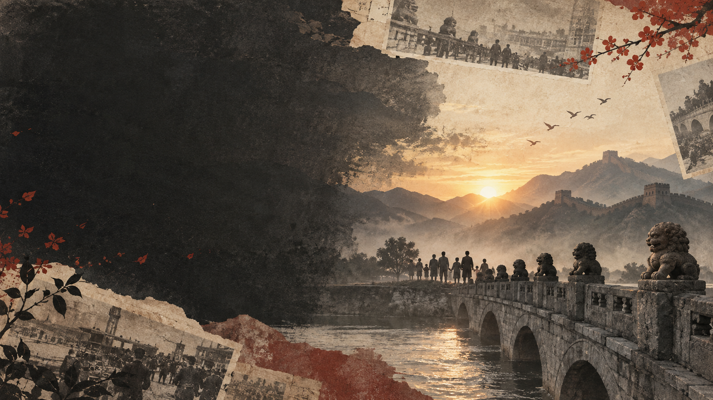

一条时间线 · 先看懂整课
十四年，六个关键时间点
14 年抗战 · 1931—1945

勿忘国耻 · 中国东北
1931
九一八事变
- 时间
- 9月18日
- 地点
- 中国东北
- 影响
- 东北陷入严重危机，中国人民开始艰苦抗日斗争
“九一八，九一八，从那个悲惨的时候……”

不能忘记的历史
1937
南京大屠杀
12月13日，日军攻占南京。随后发生了持续数周的大规模杀戮和暴行。南京大屠杀死难者达30万人以上。
12月13日南京大屠杀死难者国家公祭日
铭记历史，不是为了延续仇恨，而是为了珍爱和平。
面对侵略，中国人民怎么办？
团结抗战
抗日武装
奔赴前线，抵抗侵略
正面战场
将士们英勇作战
普通百姓
生产物资，参加救亡
海外华侨
捐款支援，回国救护
抗战不只是军人的事情，越来越多的人都行动了起来。
1936 · 西安事变
从内战走向共同抗日
日本侵略扩大，国内却仍有内战
张学良、杨虎城发动西安事变
停止内战，共同抗日
为再次合作抗日创造条件

1937年7月7日
七七事变
日本进一步扩大侵华战争
↓中国进入全民族抗战阶段
↓ 团结就是力量敌后战场 · 在敌人后方坚持抗战
建立根据地，
发动群众，坚持抗战
抗日根据地发动群众延安百团大战
中国共产党领导的抗日武装深入敌后，建立抗日根据地，并开展了许多抗日作战。
为什么课文叫“中流砥柱”？
中流砥柱
比喻在困难和危险中，发挥重要支撑作用的力量。
- 01倡导建立抗日民族统一战线
- 02动员和组织群众参加抗战
- 03开辟敌后战场，建立抗日根据地
- 04坚持长期抗战
- 05推动全民族共同抗战
本课教材把中国共产党在抗日战争中的作用概括为“抗日战争的中流砥柱”。
1945 · 十四年抗战终于胜利
胜利，来之不易
8月15日日本宣布无条件投降
9月2日日本代表正式签署投降书
9月3日中国人民抗日战争胜利纪念日

1931九一八事变
1937全民族抗战
1945抗战胜利
我们为什么还要学习这段历史？
铭记历史，
不是为了仇恨
了解战争给人民带来的灾难
知道今天的和平生活来之不易
珍惜学习机会，做好应该做的事
记住历史，是为了更好地走向未来。